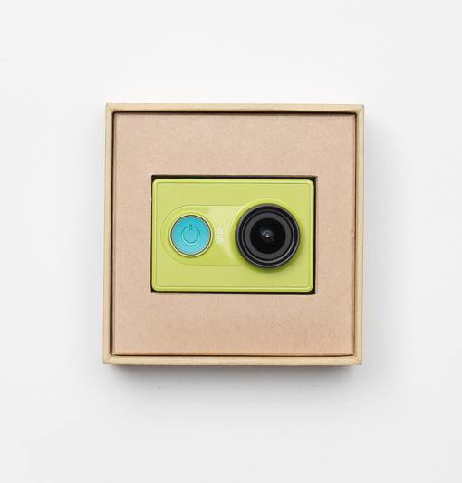
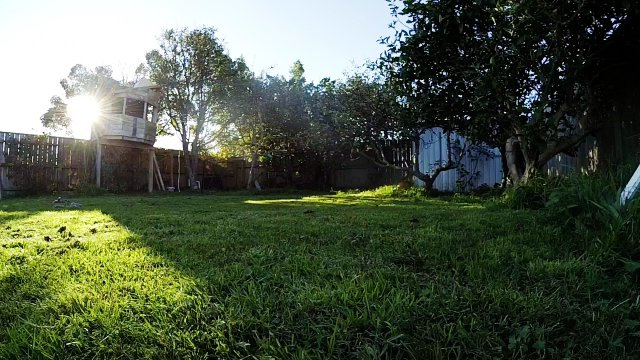
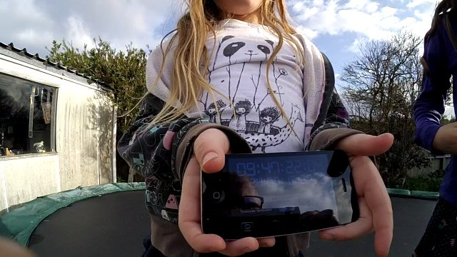

Cameras
I spent a bit of time considering cameras. It seemed there were no commercially available options to build a sperical cam array outside of the gopro360. I would love to build a rig from gopros. I mean it’s pro shit, can sync, lots of great features, Protune, it’s popular, which means it gets lots of attention and lots of resources out there for info… all great stuff.
But here where I live one hero4 black is $700NZ. Thats a lot of clams if I’m gonna by 6 or 8 or 10 of these. I just couldn’t do it.
I also thought it could be cool to have an array of usb 3.0 machine vision cameras, but these also were not a realistic option.

Fortunately for me around this time an interesting camera showed up in the market, Xiaomi Yi camera $70US.
The main specifications are here, pdf
It’s got a great sensor, Sony ExmorR(pdf) and a great dsp, A7LS
To start out, I bought two for a stereo rig. I’ve been happy with the image quality, particularly in the daylight

I put them together into a holder made from some aluminum angle bar I had and some rubberbands and did some tests. Sync is important for the steroscopy to work. My solution here was to show some timecode to my camera, afterwards line them up and trim
